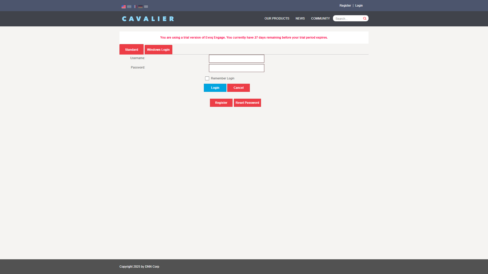
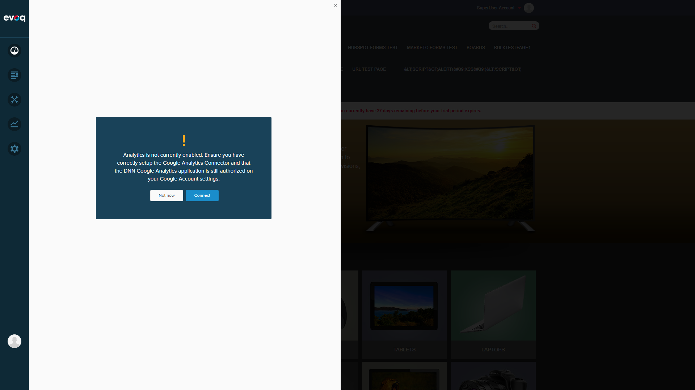

Step 2: Login as SuperUser
PASS
Action: Enter credentials (host / Pass123456) and click Login
Result: Successfully logged in as SuperUser Account. PersonaBar visible on left side.

Extension: Evoq.PersonaBar.CommunityAnalytics (PersonaBar Module)
Feature Priority: Medium
Test Date: December 30, 2025
Tester: Automated Test (Claude Code)
The Engagement Trend Indicators feature could not be tested due to a critical JavaScript error in the Community Analytics module. The module fails to load with the error: TypeError: utility.serializeCustomDate is not a function
Visual indicators showing engagement trends with up/down arrows and warnings. This feature displays trend data for community engagement metrics including:
PersonaBar > Dashboard > Community Analytics > Trend Indicators
| Test Scenario | Status | Notes |
|---|---|---|
| Display correct trend arrows | BLOCKED | Module failed to load |
| Show warning for concerning trends | BLOCKED | Module failed to load |
| Test threshold calculations | BLOCKED | Module failed to load |
| Verify indicator colors | BLOCKED | Module failed to load |
| Test tooltip displays | BLOCKED | Module failed to load |
| Validate trend persistence | BLOCKED | Module failed to load |
PASS
Action: Navigate to http://localhost:8081/Login
Result: Login page loaded successfully with username and password fields.
PASS
Action: Enter credentials (host / Pass123456) and click Login
Result: Successfully logged in as SuperUser Account. PersonaBar visible on left side.
PASS
Action: Click on Dashboard icon in PersonaBar
Result: Site Analytics panel opened. Confirmed that "Community Analytics" option exists in dropdown.

FAIL
Action: Click on "Community Analytics" from Dashboard hover menu
Result: Module failed to load. A warning dialog appeared about Google Analytics, and the Community Analytics panel remained blank.
FAIL
Action: Retry accessing Community Analytics panel
Result: Same failure - blank panel with JavaScript error in console.

Severity: Critical (Blocker)
Impact: Community Analytics module completely fails to load, blocking all related functionality including Engagement Trend Indicators.
The error occurs in social-dashboard-combined-instance.js at line 1025. The code expects a utility.serializeCustomDate function to be available, but this function is either:
The problematic code in social-dashboard-instance.js:1027:
| File | Location |
|---|---|
| social-dashboard-combined-instance.js | admin/personaBar/scripts/ |
| social-dashboard-instance.js | admin/personaBar/scripts/ |
| social-dashboard.html | admin/personaBar/ |
Based on the code review of the relevant files, the Engagement Trend Indicators feature is designed to work as follows:
| Indicator | CSS Class | Image | Progress Value |
|---|---|---|---|
| Up Arrow (Higher) | .higher | icon-engagement-up.png | percentProgress: 1 |
| Down Arrow (Lower) | .lower | icon-engagement-down.png | percentProgress: -1 |
| Warning | .engagement-warning | icon-engagement-warning.png | healthStatus: -1 |
| Star (Exceptional) | .engagement-star | icon-engagement-star.png | healthStatus: 1 |
| Hidden (Equal) | .hidden | N/A | percentProgress: 0 |
Tooltips are generated by the createComparativeTooltip() function which provides comparison data like "Up 10% compared to last week".
| Property | Value |
|---|---|
| Website URL | http://localhost:8081 |
| Evoq Version | Evoq Engage v10.01.01 (Trial - 27 days remaining) |
| Browser | Chromium (Playwright) |
| Viewport | 1920x1080 |
| Test User | SuperUser (host) |